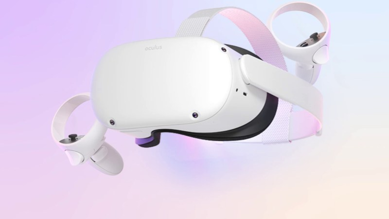
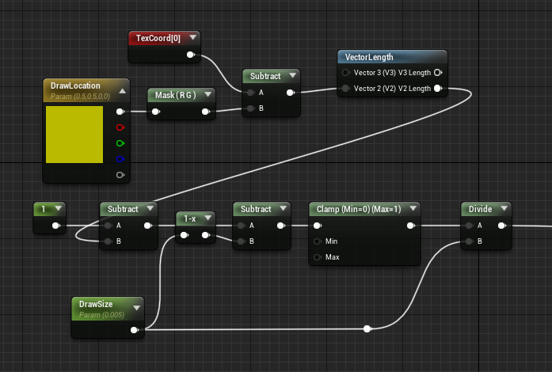

Ik had een VR painting applicatie met custom handtracking gemaakt in Unreal Engine 4.25. Ik vond dit een zeer leerzame project en heb veel geleerd.
Je kan je handen gebruiken om een pen oppakken en tekenen op een canvas.
Ik had me eerst gefocussed op hoe VR handtracking werkt en een manier vinden hoe ik dat moest namaken. Ik heb uiteindelijk een video gevolgd die alles stap voor stap uitlegde. Er zitten camera's aan de voorkant van de VR bril.
Hoe werkt handtracking? Handtracking werkt via de inside-out camera's van de Oculus Quest 2 en Quest. Je headset detecteert de positie en oriëntatie van je handen en de configuratie van je vingers. Zodra dit is gedetecteerd, worden computervisie-algoritmes gebruikt om de beweging en oriëntatie van je handen te volgen.
Ik had een shader gemaakt waarmee je als je op een locatie de pen zet dat hij daar tekent. Dat heb ik bereikt met render targets.
Render targets zijn textures die je in runtime kan aanpassen. Dankzij render textures kan ik op de canvas tekenen doormiddel van de locatie te vinden via een line trace. Als de line trace de canvas raakt dan pakt hij de UV coordinaten en tekent hij daarop.
{kind=link}